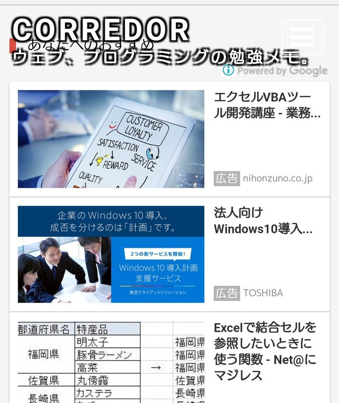
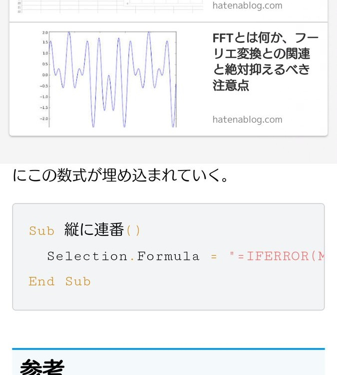

Google AdSense 自動広告の「アンカー広告」がページを押し下げないようにする
Google AdSense に導入された「自動広告」のうち、「アンカー広告」という広告ユニットが、ページ全体を押し下げてしまう、という話を以前書いた。
以前の記事では、コンテンツ全体を position: absolute でフローティングすることで、「アンカー広告」にページを押し下げられても逃げられる方法を紹介した。
しかしこの方法だと、「関連コンテンツ」という別の自動広告ユニットの配置に影響があることが分かった。
「関連コンテンツ」は、本来ページ最下部に表示されるのだが、コンテンツ全体がフローティングしているので、結果的にページの最上部から、コンテンツに重なって表示されてしまうのだ。


↑このように、「あなたへのおすすめ」という見出しが付くのが「関連コンテンツ」広告ユニット。ヘッダ部分から重なってしまい、コンテンツの冒頭が読めなくなってしまっている (提供 : @Rurux)。
この事象、なぜか iPhone では遭遇せず、手元で確認できなかったのだが、Android 端末の Chrome ブラウザでは発生したようだ。
そこで改めて「アンカー広告」の仕組みを調べ、対処法を考えることにした。
iPhone で「アンカー広告」が表示されている状態で Mac に USB 接続し、Safari ブラウザの Web インスペクタでデバッグしてみた。すると、「アンカー広告」が body 要素に style 属性を埋め込み、動的に padding を変更していることが分かった。これによってページ最上部に隙間ができ、コンテンツが押し下げられていたのだ。
ということは、コンテンツが押し下げられないようにするには、style 属性での padding 指定を上回るよう、!important 指定で CSS を定義しておけば良い。
body {
padding: 0 !important; /* 「アンカー広告」がページを押し下げないように指定 */
}
そしてコンテンツ全体に適用していた position: absolute は外し、自然に配置するように戻した。
こうすることで、「アンカー広告」によるページの押し下げは回避しつつ、「関連コンテンツ」はページ最下部に自然に表示させられるようになった。